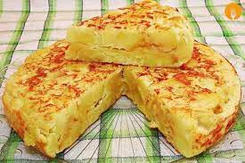

Spain Omelette

Spain Omelette is an omelette to which chopped potatoes are added.It is one of the best known and most emblematic dishes of Spanish cuisine, being a very popular product that can be found in almost any bar or restaurant in the country.
Ingredients
- Eggs
- Potatoes
- Extra virgin olive oil
Steps
- Peel and cut the potatoes.
- Heat the frying pan and add a good extra virgin olive oil.
- Add the cut potatoes and leave to cook for approximately twenty to thirty minutes over a low heat.
- Once the potatoes are brown, drain them and put them to the bowl with the eggs.
- We cook the mixture we have and leave it in the pan until it reaches our favourite point.
- Finally we turn it over with a large plate and let it heat up on the other side.